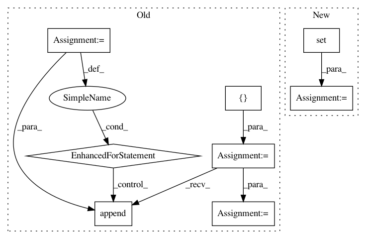

2402c8a3c28f5c6faf9931fe97b6516b7c426edb,smac/smbo/intensification.py,Intensifier,intensify,#Intensifier#,87
Before Change
chal_perf = sum(map(lambda x: x.cost, challenger_runs))
inc_id = self.run_history.config_ids[self.incumbent.__repr__()]
inc_perfs = []
for i, r in chal_inst_seeds:
inc_k = self.run_history.RunKey(inc_id, i, r)
inc_perfs.append(self.run_history.data[inc_k].cost)
inc_perf = sum(inc_perfs)
if chal_perf > inc_perf:
// Incumbent beats challenger
self.logger.debug("Incumbent (%.2f) is better than challenger (%.2f)." %(inc_perf, chal_perf))
After Change
to_run = missing_runs[:min(N, len(missing_runs))]
missing_runs = missing_runs[min(N, len(missing_runs)):]
inst_seed_pairs = list(inc_inst_seeds - set(missing_runs))
inc_perf, inc_time = self.get_perf_and_time(self.incumbent, inst_seed_pairs)
_, chal_time = self.get_perf_and_time(challenger, chall_inst_seeds)
//TODO: do we have to consider PAR10 here instead of PAR1?
In pattern: SUPERPATTERN
Frequency: 5
Non-data size: 8
Instances
Project Name: automl/SMAC3
Commit Name: 2402c8a3c28f5c6faf9931fe97b6516b7c426edb
Time: 2016-02-12
Author: lindauer@cs.uni-freiburg.de
File Name: smac/smbo/intensification.py
Class Name: Intensifier
Method Name: intensify
Project Name: Scitator/catalyst
Commit Name: 7f7c0a8f880062d28d3b8dae6d622273e9c37b6b
Time: 2019-04-25
Author: alex.gaziev@gmail.com
File Name: catalyst/utils/tests/test_data.py
Class Name:
Method Name: test_stratified_fold_split
Project Name: CyberReboot/NetworkML
Commit Name: b176e0bd89a243e36cc4db02735aaf896c3ca4a2
Time: 2020-01-30
Author: josh@vandervecken.com
File Name: networkml/featurizers/funcs/host.py
Class Name: Host
Method Name: pyshark_layers
Project Name: uber/petastorm
Commit Name: f57c6162ea1dd0d9958d647a67e717f1de9caace
Time: 2018-12-09
Author: yevgeni@uber.com
File Name: petastorm/tests/test_end_to_end.py
Class Name:
Method Name: test_partition_multi_node
Project Name: mozilla/bugbug
Commit Name: 9357b91c16118f2b7f29dcdd7e3f96934e1c4184
Time: 2019-06-03
Author: mcastelluccio@mozilla.com
File Name: bugbug/models/duplicate.py
Class Name: DuplicateModel
Method Name: get_labels